Perceptrons
Table of Contents
Imports
From PyPi
from graphviz import Digraph
import matplotlib.pyplot as pyplot
import numpy
import pandas
import seaborn
Setup the Plotting
%matplotlib inline
seaborn.set(style="whitegrid")
FIGURE_SIZE = (14, 12)
What is a Perceptron?
A perceptron is a model based on the neuron that works as a linear classifier.
Our acceptance model from the previous post:
\[ 2x_1 + x_2 - 18 = 0 \]
Would be modeled by something like this.
/home/brunhilde/.virtualenvs/In-Too-Deep/bin/python3: No module named virtualfishgraph = Digraph(comment="Perceptron", format="png")
graph.graph_attr["rankdir"] = "LR"
graph.node("a", "Test")
graph.node("b", "Grade")
graph.node("c", "-18")
graph.node("d", "Label")
graph.edge("a", "c", label="2")
graph.edge("b", "c", label="1")
graph.edge("c", "d")
graph.render("graphs/perceptron.dot")
graph
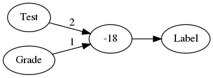
Where the weights on the edges of the graph are multiplied by the values from the input nodes and then added together with -18. The constant we add at the end is called a bias value, and an alternative way to notate it is to add an input node for it that always has a value of 1 for the input and -18 for the edge. This is equivalent to the previous graph but makes it a little more consistent.
/home/brunhilde/.virtualenvs/In-Too-Deep/bin/python3: No module named virtualfishgraph = Digraph(comment="Perceptron 2", format="png")
graph.graph_attr["rankdir"] = "LR"
graph.node("a", "Test")
graph.node("b", "Grade")
graph.node("e", "Bias=1")
graph.node("c", "+")
graph.node("d", "Label")
graph.edge("a", "c", label="2")
graph.edge("b", "c", label="1")
graph.edge("e" , "c", label="-18")
graph.edge("c", "d")
graph.render("graphs/perceptron_2.dot")
graph
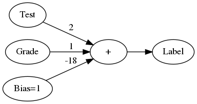
We can re-draw the graph to make it more explicit that there is a separate step-wise function to convert the score to a label, as well as use the more general notation of x and w.
/home/brunhilde/.virtualenvs/In-Too-Deep/bin/python3: No module named virtualfishgraph = Digraph(comment="Perceptron 3", format="png")
graph.graph_attr["rankdir"] = "LR"
graph.node("a", "Test")
graph.node("b", "Grade")
graph.node("e", "Bias=1")
graph.node("c", "+")
graph.node("d", "Step Function")
graph.node("f", "Label")
graph.edge("a", "c", label="2")
graph.edge("b", "c", label="1")
graph.edge("e" , "c", label="-18")
graph.edge("c", "d")
graph.edge("d", "f")
graph.render("graphs/perceptron_3.dot")
graph
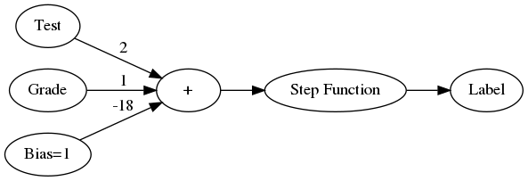
Why are these called neural networks?
The perceptron is modeled on a neuron in the brain which takes signal inputs and decides to fire (or not) based on these inputs.
Can perceptrons do logic?
The AND operator
Here's the truth table for the And operator.
| Input 1 | Input 2 | Output |
|---|---|---|
| 0 | 0 | 0 |
| 0 | 1 | 0 |
| 1 | 0 | 0 |
| 1 | 1 | 1 |
So how would you make a perceptron for this? Remember that the perceptron is a linear separator, so if you think if the two inputs as axes on the plane, you would fit a line that separates the outputs of 0 from the output of 1.
A Perceptron Class
class Perceptron:
"""Simple single perceptron
Args:
weight_x: weight for input x values
weight_y: weight for input y values (x2)
bias: bias scalar
"""
def __init__(self, weight_x: float, weight_y: float, bias: float) -> None:
self.weight_x = weight_x
self.weight_y = weight_y
self.bias = bias
return
def score(self, x: float, y: float) -> float:
"""calculate score for the inputs
Args:
x, y: inputs to the linear equation
Returns:
score: value representing which side of the line the point is
"""
return self.weight_x * x + self.weight_y * y + self.bias
def separator(self, x:float) -> float:
"""generates the values for the separation line
Args:
x: the input value to generate the y-value for
Returns:
y: value for the plot given x
"""
return -(self.weight_x * x + self.bias)/self.weight_y
def update(self, weights: numpy.ndarray) -> None:
"""Updates the weights
Args:
weights: array of new weights (including bias)
"""
self.weight_x = weights[0]
self.weight_y = weights[1]
self.bias = weights[2]
return
def __call__(self, x:float, y:float) -> int:
"""converts the score to a label
This is the stepwise function
Args:
x, y: point values to check
Returns:
label: 1 if right of the line, 0 otherwize
"""
return int(self.score(x, y)>=0)
A Truth Table Printer
def truth_table(perceptron):
binary = [0, 1]
print("|Input 1|Input 2| Label|")
print("|-+-+-|")
for input_1 in binary:
for input_2 in binary:
output = perceptron(input_1, input_2)
print(
"|{}|{}|{}|".format(
input_1, input_2, output))
return
perceptron_and = Perceptron(weight_x=1, weight_y=1, bias=-1.5)
So now here's the perceptron's truth table.
/home/brunhilde/.virtualenvs/In-Too-Deep/bin/python3: No module named virtualfishtruth_table(perceptron_and)
| Input 1 | Input 2 | Label |
|---|---|---|
| 0 | 0 | 0 |
| 0 | 1 | 0 |
| 1 | 0 | 0 |
| 1 | 1 | 1 |
figure, axe = pyplot.subplots()
axe.set_xlim((-.1, 1.1))
axe.set_ylim((-.1, 1.1))
axe.plot([0,0,1], [0, 1, 0], "bo", label="Not AND")
axe.plot([0.4, 1.1], [perceptron_and.separator(0.4), perceptron_and.separator(1.1)], "k")
axe.plot([1], [1], "ro", label="AND")
axe.set_title("Logical AND")
legend = axe.legend()
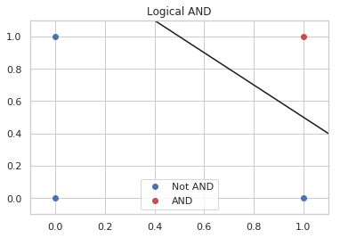
Perceptron OR
A similar thing can be done for the OR operator.
| Input 1 | Input 2 | Output |
|---|---|---|
| 0 | 0 | 0 |
| 0 | 1 | 1 |
| 1 | 0 | 1 |
| 1 | 1 | 1 |
perceptron_or = Perceptron(weight_x=1, weight_y=1, bias=-0.5)
And once again I'll check that the perceptron can replicate the truth table.
/home/brunhilde/.virtualenvs/In-Too-Deep/bin/python3: No module named virtualfishtruth_table(perceptron_or)
| Input 1 | Input 2 | Label |
|---|---|---|
| 0 | 0 | 0 |
| 0 | 1 | 1 |
| 1 | 0 | 1 |
| 1 | 1 | 1 |
figure, axe = pyplot.subplots()
axe.plot([0], [0], "bo", label="Not OR")
axe.set_xlim((-.1, 1.1))
axe.set_ylim((-.1, 1.1))
axe.plot([-0.1, 0.8], [perceptron_or.separator(-0.1),
perceptron_or.separator(0.8)], "k")
axe.plot([0, 1, 1], [1, 0, 1], "ro", label="OR")
axe.set_title("Logical OR")
legend = axe.legend()
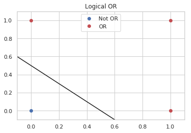
If you look at the plot you can see that the separator has to move lower, so, somewhat unintuitively your intercept (bias) should be less negative.
Or you should give more weight to the inputs.
/home/brunhilde/.virtualenvs/In-Too-Deep/bin/python3: No module named virtualfishperceptron_or_2 = Perceptron(weight_x=2.5, weight_y=2, bias=-1.5)
And here's the table generated with the same bias as the AND perceptron but with heavier weights.
/home/brunhilde/.virtualenvs/In-Too-Deep/bin/python3: No module named virtualfishtruth_table(perceptron_or_2)
| Input 1 | Input 2 | Label |
|---|---|---|
| 0 | 0 | 0 |
| 0 | 1 | 1 |
| 1 | 0 | 1 |
| 1 | 1 | 1 |
figure, axe = pyplot.subplots()
axe.plot([0], [0], "bo", label="Not OR")
axe.set_xlim((-.1, 1.1))
axe.set_ylim((-.1, 1.1))
axe.plot([-0.1, 0.8], [perceptron_or_2.separator(-0.1),
perceptron_or_2.separator(0.8)], "k")
axe.plot([0, 1, 1], [1, 0, 1], "ro", label="OR")
axe.set_title("Logical OR")
legend = axe.legend()
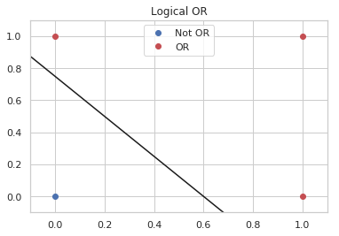
Seems to work okay.
NOT
The NOT operation only looks at one input. To re-use our perceptron we can set the weights so it ignores the first input and negates the second.
Here's the Truth Table for NOT.
| X | NOT |
|---|---|
| 0 | 1 |
| 1 | 0 |
So now we create a perceptron with an x-weight of 0.
/home/brunhilde/.virtualenvs/In-Too-Deep/bin/python3: No module named virtualfishperceptron_not = Perceptron(weight_x = 0, weight_y=-1, bias=0.5)
And see the output.
/home/brunhilde/.virtualenvs/In-Too-Deep/bin/python3: No module named virtualfishtruth_table(perceptron_not)
| Input 1 | Input 2 | Label |
|---|---|---|
| 0 | 0 | 1 |
| 0 | 1 | 0 |
| 1 | 0 | 1 |
| 1 | 1 | 0 |
The table is overkill, since we only need to test two outputs, but it shows that even with the same inputs as the other perceptrons it can negate the second input.
/home/brunhilde/.virtualenvs/In-Too-Deep/bin/python3: No module named virtualfishfigure, axe = pyplot.subplots()
axe.set_xlim([-.1, 1.1])
axe.set_ylim([-.1, 1.1])
axe.plot([0, 1], [0, 0], "ro", label="False")
axe.plot([0, 1], [1, 1], "bo", label="True")
axe.plot([-.1, 1.1], [perceptron_not.separator(-.1),
perceptron_not.separator(1.1)], "k")
axe.set_title("Logical NOT")
legend = axe.legend()
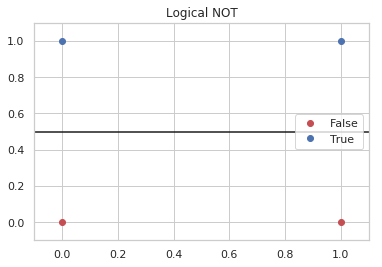
What about the XOR?
The XOR operator only returns True if one or the other input is True, not if both are True.
| Input 1 | Input 2 | XOR |
|---|---|---|
| 0 | 0 | 0 |
| 0 | 1 | 1 |
| 1 | 0 | 1 |
| 1 | 1 | 0 |
figure, axe = pyplot.subplots()
axe.set_title("XOR")
axe.plot([0, 1], [1, 0], "ro", label="XOR")
axe.plot([0, 1], [0, 1], "bo", label="Not XOR")
legend = axe.legend()
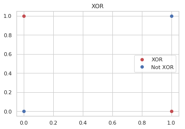
If you look at the plot you can see that a single straight line won't separate the blue and the red dots. The solution turns out to add a layers of perceptrons to make it work.
/home/brunhilde/.virtualenvs/In-Too-Deep/bin/python3: No module named virtualfishgraph = Digraph(comment="Multilayer Perceptron", format="png")
graph.graph_attr['rankdir'] = "LR"
graph.node("a", " ")
graph.node("b", " ")
graph.node("c", "A")
graph.node("d", "B")
graph.node("e", "C")
graph.node("f", "AND")
graph.node("g", "XOR")
graph.edges(["ac", "ad", 'bc', 'bd', 'ce', 'ef', 'df', 'fg'])
graph.render("graphs/multilayer_perceptron.dot")
graph
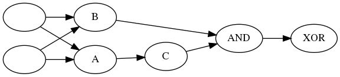
A, B, and C are OR, NOT and AND perceptrons, the key is to figure out which is which. The trick is to notice that AND is True when both are true, so we want B to to be 1 everytime there is at least one True and C to negate the one case when they're both True. So B is an OR, C is NOT and A is an AND (because and is True only when they're both True and C negates it).
/home/brunhilde/.virtualenvs/In-Too-Deep/bin/python3: No module named virtualfishgraph = Digraph(comment="Multilayer Perceptron", format="png")
graph.graph_attr['rankdir'] = "LR"
graph.node("a", " ")
graph.node("b", " ")
graph.node("c", "AND 1")
graph.node("d", "OR")
graph.node("e", "NOT")
graph.node("f", "AND 2")
graph.node("g", "XOR")
graph.edges(["ac", "ad", 'bc', 'bd', 'ce', 'ef', 'df', 'fg'])
graph.render("graphs/multilayer_perceptron_2.dot")
graph
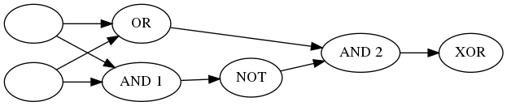
| Input 1 | Input 2 | AND 1 | NOT | OR | AND 2 |
|---|---|---|---|---|---|
| 0 | 0 | 0 | 1 | 0 | 0 |
| 0 | 1 | 0 | 1 | 1 | 1 |
| 1 | 0 | 0 | 1 | 1 | 1 |
| 1 | 1 | 1 | 0 | 1 | 0 |
It's not the clearest table, but AND 1 and OR both take the original inputs, then NOT negates AND 1 and the output of NOT and OR feed into AND 2 which puts out our exclusive or.
Here's what happens when we use the perceptrons we created earlier to generate the same table.
/home/brunhilde/.virtualenvs/In-Too-Deep/bin/python3: No module named virtualfishinputs = [[0, 0],
[0, 1],
[1, 0],
[1, 1]]
print("| Input 1 | Input 2 | AND 1 | NOT | OR | XOR |")
print("|---------+---------+-------+-----+----+-------|")
row = "|" + "{}|" * 6
for (x, y) in inputs:
and_1 = perceptron_and(x, y)
nand = perceptron_not(0, and_1)
or_1 = perceptron_or(x, y)
xor = perceptron_and(nand, or_1)
print(row.format(x, y, and_1, nand, or_1, xor))
| Input 1 | Input 2 | AND 1 | NOT | OR | XOR |
|---|---|---|---|---|---|
| 0 | 0 | 0 | 1 | 0 | 0 |
| 0 | 1 | 0 | 1 | 1 | 1 |
| 1 | 0 | 0 | 1 | 1 | 1 |
| 1 | 1 | 1 | 0 | 1 | 0 |
Looks right.
Nand
that the combination or AND and NOT is a NAND operator so you could simplify the diagram a little back to just two layers.
/home/brunhilde/.virtualenvs/In-Too-Deep/bin/python3: No module named virtualfishgraph = Digraph(comment="Two-Layer XOR Perceptron", format="png")
graph.graph_attr['rankdir'] = "LR"
graph.node("a", " ")
graph.node("b", " ")
graph.node("c", "NAND")
graph.node("d", "OR")
graph.node("f", "AND")
graph.node("g", "XOR")
graph.edges(["ac", "ad", 'bc', 'bd', "cf", 'df', 'fg'])
graph.render("graphs/two_layer_xor.dot")
graph
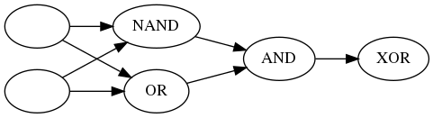
That's a lot of work to get an XOR, how are we going to classify images like this?
This isn't about image classification, but we probably should note that you normally wouldn't try and figure out the parameters by hand, the perceptron can tune itself. The way it does this is by picking some initial random values and then it repeatedly tests how well it did and adjusts the weights.
How does it adjust the weights?
This is what's called "the Perceptron Trick". It basically forms a vector for each of the misclassified points \((x_1, x_2, 1)\) and subtracts it from the weights \((w_1, w_2, b)\) if the score was on the positive side and adds to it if the score was on the negative side. It then repeats this for each of the misclassified points. Since we have multiple points we don't want it to just make these huge jumps, so the misclassified points vector is multiplied by some fraction (called the learning rate) so that the changes are small. Once it has the new weights it then tests itself again and makes another adjustment.
Question
If the original line was \(3x_1 + 4x_2 - 10 = 0\), and the learning rate was set to 0.1, how many adjustments would you have to make to reach the point (1, 1)?
/home/brunhilde/.virtualenvs/In-Too-Deep/bin/python3: No module named virtualfishx, y = 1, 1
weights = numpy.array([3, 4, -10])
learning_rate = 0.1
adjustment = numpy.ones(3) * learning_rate
output = 0
adjustments = 0
perceptron = Perceptron(weights[0], weights[1], weights[2])
while True:
output = perceptron.score(x, y)
if output >= 0:
break
print(output)
adjustments += 1
direction = 1 if output < 0 else -1
weights = weights + direction * adjustment
perceptron.update(weights)
print("Final Output: {}".format(output))
print(print("Adjustments: {}".format(adjustments)))
-3 -2.700000000000001 -2.4000000000000012 -2.1000000000000014 -1.8000000000000025 -1.5000000000000036 -1.2000000000000028 -0.9000000000000039 -0.600000000000005 -0.30000000000000604 -7.105427357601002e-15 Final Output: 0.29999999999999183 Adjustments: 11 None
I came up with 11 adjustments but Udacity says 10… Close enough, I guess.